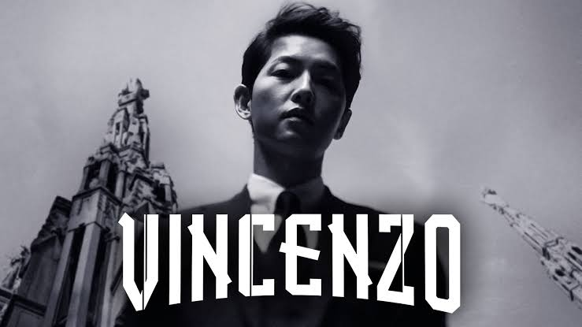
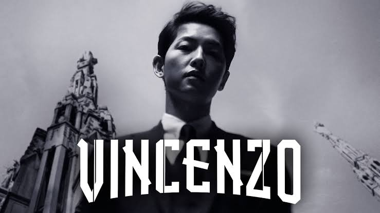

There are so many people who are watching episodes of kdrama. The craze about watching it started before and I wasn't interested. However, lately I become fond of it due to the reason that it has moral lessons. I just started watching one kdrama and I didn't notice that I have already finished all the episodes it has. Some lessons from it are relatable and can be applied in real life. One of my plans when this school semester end, is maybe to watch some kdrama again.
| 1.) Crash Landing on You | 11.) I'm Not A Robot |
| 2.) Descendants of the sun | 12.) Reply 1988 |
| 3.) Good Doctor | 13.) Goblin |
| 4.) Dr. Romantic | 14.) Legend of the Blue Sea |
| 5.) Dr. Romantic 2 | 15.) Vincenzo |
| 6.) Itaewon Class | 16.) Start-Up |
| 7.) Weightlifting Fairy Kim Bok Joo | 17.) Our Beloved Summer |
| 8.) It's Okay to Not Be Okay | 18.) Hometown Cha-Cha-Cha |
| 9.) Angel's Last Mission: Love | 19.) Twenty-Five Twenty-One |
| 10.) Hotel Del Luna | 20.) My Liberation Notes |
Here are some photo of the kdramas that are listed above. By clicking the pictures, this will direct you to wikipedia for more info about it.
Copyright © 2022 by Princess Ann Margaret Uy